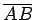
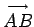

Inhalt Index DeskTop Bronstein

 Geometrie Planimetrie Grundbegriffe Punkt, Gerade, Strahl, Strecke
Geometrie Planimetrie Grundbegriffe Punkt, Gerade, Strahl, Strecke


Ein Strahl enthält genau die und nur die Menge aller der Punkte einer Geraden, die auf der gleichen Seite eines Punktes 0 dieser Geraden liegen, den Punkt 0 inbegriffen. Man kann sich den Strahl durch die Bewegung eines Punktes vorstellen, die im Punkt 0 beginnt und ohne Richtungsänderung auf der Geraden erfolgt, ähnlich wie ein Lichtstrahl nach seiner Emission, solange dieser nicht abgelenkt wird.
Eine Strecke  enthält genau die Menge aller Punkte einer Geraden, die zwischen zwei Punkten A und B dieser Geraden liegen, die Punkte A und B inbegriffen. Die Strecke ist die kürzeste Verbindung der beiden Ebenenpunkte A und B. Der Durchlaufsinn einer Strecke wird mit Hilfe eines Pfeiles gemäß  gekennzeichnet oder als Richtung vom erstgenannten Punkt A nach dem zweitgenannten Punkt B verstanden.